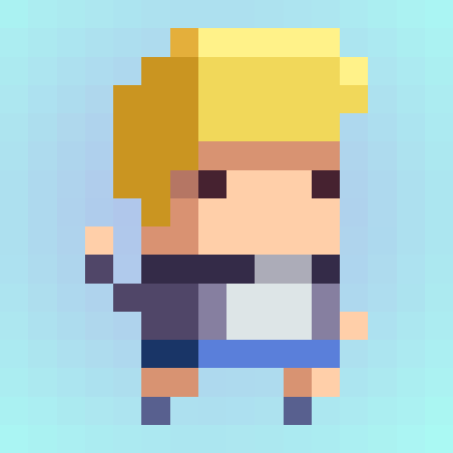

Daniel Peña

Ingeniero Informático
Madrid, España
15-Abril-1994
Portfolio
Hola!
Soy Daniel Peña y este es mi Portfolio personal.
Aquí encontrarás una pequeña muestra de los trabajos que he ido realizando con el fin de aprender sobre el mundo de los videojuegos
Red Neuronal + Algoritmo Genético
Proceso de aprendizaje de una red neuronal al mezclarse con un algoritmo genético.
El objetivo de cada individuo es el de llegar lo más lejos posible evitando los obstáculos
En cada iteración los individuos que más lejos llegan pasan su información a la siguiente generación. Así se puede ver como en cada iteracion se toman mejores decisiones para lograr el objetivo.

Algoritmo Genético
En este caso los individuos parten de un comportamiento totalmente aleatorio y su objetivo es llegar hasta el punto marcado. En cada iteración se ve como se quedan mas cerca del objetivo ya que los individuos que más cerca llegan, pasan su informacion a las siguientes generaciones.

Naves
Videojuego completo, basado en los famosos videojuegos Invaders y Asteroids.
El objetivo es proteger tu base de los distintos asteroides que intentan llegar hasta él.

Assets 3D
Diseños 3D realizados en Blender para el diseño de un videojuego
Escenario 3D
Mundo diseñado para un pequeño juego de aventuras
Generación Procedimental de Mazmorras
Videojuego basado en la generación procedimental de niveles del videojuego Spelunky. Cada nivel, se crea de forma aleatoria, basándose en ciertos patrones de diseño, con ciertas estructuras prediseñadas. Lo que hace de cada nivel una aventura totalmente distinta.

LineRider
Réplica del videojuego Line Rider.
Mario
Réplica de Super Mario con un estilo muy minimalista.

Stack
Réplica del videojuego Stack de Ketchapp

Partículas
Diseño de distintos efectos con partículas.

Generacion Mazmorras
Muestra del gran potencial de la generación procedimental para la creación de distintos niveles en un videojuego de mazmorras

Physics
Físicas en un entorno 2D, utilizando distintos pesos, hinge joints y colliders
Snake
Réplica del videojuego Snake, uno de mis videojuegos favoritos de la infancia.
Pong
Primer videojuego completado con elementos de UI, físicas y colisiones.